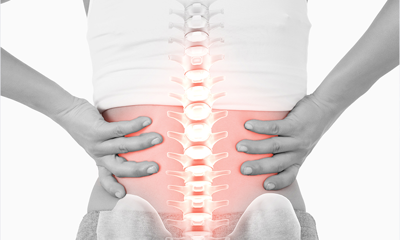

DNA 주사치료
DNA 주사치료
고농도의 포도당, 히알루론산, 혈소판 농축 혈장등의 증식제를 손상된 인대나 힘줄에 주입하여 해당 부위 염증 반응을 일으켜 자연치유를 촉진을 통해 세포 재생을 시켜주는 비수술적 치료방법입니다.

DNA 주사치료 효과
일시적 통증 완화 뿐만 아니라 손상된 세포가 다시 자랄 수 있도록 세포재생단계부터 관여해 회복시키기 때문에 통증의 근원을 잡을 수 있으며 장기적인 관점에서 효과를 볼 수 있는 치료입니다.
DNA 주사의 과정
DNA주사는 염증 단계, 증식 단계, 재배열 단계를 거쳐 통증이 완화됩니다.- Step 01. 염증단계 손상이 발생한 부위의 세포 재생 및 조직 조성물이 증가
- Step 02. 증식단계 (섬유아세포 증식, 콜라겐, 세포간 물질 증식) 줄기세포, 연골세포, 섬유아세포 등의 세포들이 증식
- Step 03. 재배열 단계 증식된 세포들이 혈관 재생을 균일하게 유도하는 과정을 거친 뒤 통증 부위가 완화